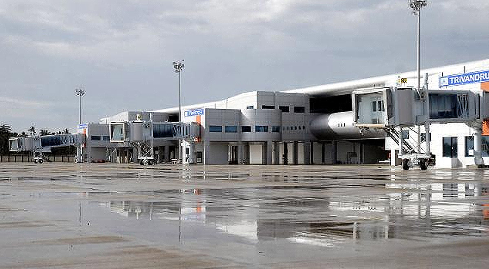
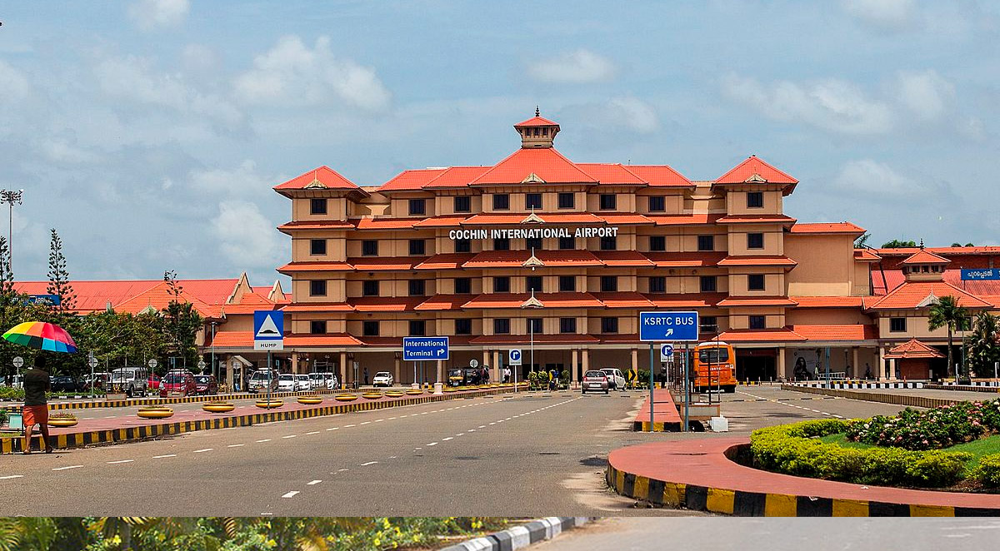
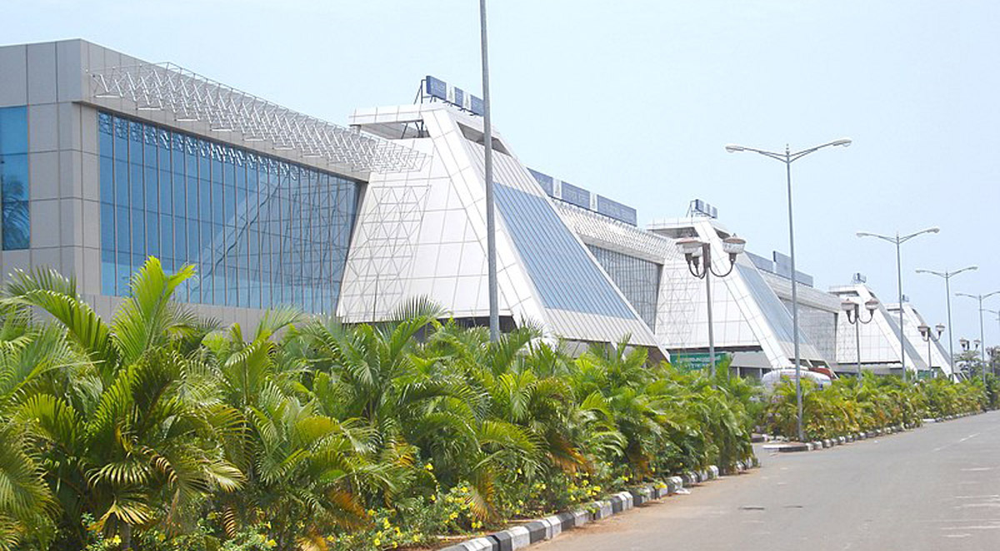
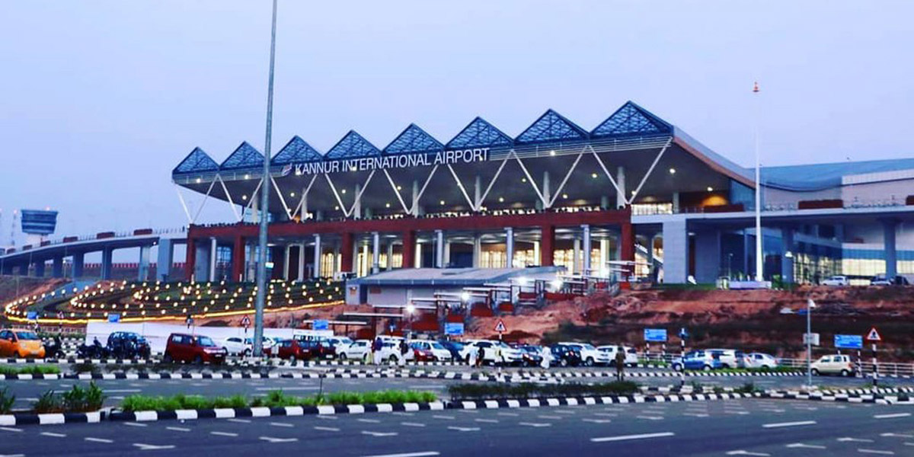

Airports in Kerala
Kerala is the only state in India that has four international airports. Airports are well connected with the rest of the country and the world. They are:
- Thiruvananthapuram International Airport
- Cochin International Airport
- Calicut International Airport
- Kannur International Airport
Airports play a very important role in tourism. Airports enable passengers to travel between countries. It also leads to the economic growth of the country. The demand for air cargo transportation has grown significantly over the last few years.
In Kerala these Airports are
1. Thiruvananthapuram International Airport:

Thiruvananthapuram Airport is the first in Kerala and the fifth international airport in India. It is the busiest airport after Kochi. It was established in 1932 under the initiative of Colonel Goda Varma Raja who was a trained pilot.
It is 7 km from the city railway station and bus station. Taxi services are also available for tourists.
Features:
- Thiruvananthapuram Airport is a major gateway for tourists of the middle east and southeast.
- It serves as a pilot training center. It also caters to the Indian airforce and the coast guard.
- There are three terminals out of which only two are operational. Terminal 1 handles domestic flight operations and Terminal 2 handles all international flight operations as well as all domestic flights.
- This Airport provides a visa on arrival facility to 11 countries. International flight booking operators also offer services to Thiruvananthapuram.
Thiruvananthapuram is a historically significant city. The royal city got its name from the god of the Hindu temple at the center of the city. It is the capital of the Kerala state. The evergreen city is a major tourist center.
The beautiful city of Thiruvananthapuram is built on hills by the seashore and is located between the Western Ghats and the Arabian Sea. Thiruvananthapuram is one of the most visited tourist destinations in Kerala.
Nearest Tourist attractions:
- Shanghumugam beach
- Kovalam Beach
- Varkala papanasam beach
- Veli lake
- Sree Padmanabha temple
- Kuthiramalika(Puthenmalika)
- Sreechithra Art Gallery
- Napier Museum
- Zoo
- Vizhinjam
- Ponmudi hill station
Location: It is 7 km from the city railway station and bus station. Taxi services are also available for tourists.
2. Cochin International Airport:

Kochi the commercial and industrial hub of Kerala is known as the Queen of the Arabian Sea. It is a major port city on the southwest coast of India. Kochi is the most popular tourist destination for domestic and international visitors. The metro city is famous for its amazing modern, cultural and historical importance.
Cochin International Airport is the first airport in India developed under a public-private partnership. It is the busiest and largest airports in Kerala. It is a fully solar-powered airport and has a dedicated solar plant.
Features:
- Cochin Airport has 3 Terminals and operates both international and domestic flights.
- It is well connected to international destinations like Abu Dhabi Dubai, Doha, Jeddah, Dammam, Muscat, Kuala Lumpur, Singapore, Colombo, and Riyadh among others.
- The domestic service by the airport includes almost all the major metros as well as other important cities such as Pune, Hyderabad, Jaipur, and Vishakhapatnam.
Passenger facilities :
- Free porterage service for the convenience of old, infants, handicapped and unaccompanied ladies and minors (this has to be co-ordinated with respective airlines).
- The terminal is provided with modern illuminated signage for adequate guidance and direction in and around the terminal.
- Drinking water facilities, public convenience for ladies and gents separately.
- A public telephone facility is available.
- Free passenger baggage trolleys.
- Tourist Information Counter.
- Counter to check missed belongings.Tourist Information Counter.
- 15 lakhs sq. ft state -of-the-art International Terminal with roofed car park.
- 6 lakhs sq. ft centrally air-conditioned Domestic Terminal with roofed car parking.
- A wide variety of reading materials besides travel requisites are available.
- X-ray machines have been provided by CIAL for screening the registered baggage of passengers.
- A medical unit is working here.
Shopping at Cochin International Airport is always a pleasure with a wide variety of world-class products. There is a duty-free shop owned by Cochin International Airport Authority of India.
Nearest Tourist attractions :
Kochi is blessed by nature, its shores are breathtaking. The wonderful view of Chinese fishing nets and its exciting beaches enhances the beauty of Kochi. The beautiful beaches are Puthuvype, Munambam, Fort Kochi, Cherai, Kuzhupilly, and Njarackal. Here tourists can enjoy a beach walk, swimming, and photography.
- Marine drive
- Fort kochi
- Mattancherry palace
- Indo-Portuguese museum
- Jewish synagogue
- Bolgatty palace
- Wellington Island
- Museum of Kerala history
- Hill Palace in Tripunithura
- Lulu shopping mall, the metro rail are other attractions in Kochi.
- Kumarakom tourist destination famous for its houseboat ride is 48.7 km from Kochi.
- Athirapally waterfalls, the largest waterfalls in Kerala is 78.9km from Kochi.
- International airport. Jungle safari trips are available there.
Location :
It is located in Nedumbassery.
27.8 km from the Ernakulam Junction.
The main Railway line from Kanyakumari to Delhi is adjacent to the airport and it is situated between Alwaye and Angamaly Railway Stations. The Cochin Sea Port is also situated nearby.
By road: Bus and pre-paid taxi are available.
3. Calicut International Airport:

Calicut International Airport, also known as Karipur Airport, is an international airport serving the cities of Kozhikode and Malappuram. It is a famous airport in Kerala. It earns fantastic revenue for the nation.
It is 7 km from the city railway station and bus station. Taxi services are also available for tourists.
Nearest Tourist Places:
- Art Gallery and Krishna Menon museum.
- Mishkal mosque is a medieval mosque located in Calicut.
- Regional Science Centre and Planetarium.
- Pazhassiraja Archaeological Museum.
- Guruvayoor temple is 7.1 km from Calicut airport.
- Kadalundi river tourism.
- Nilambur teak museum.
- Sarovaram biopark.
- ThaliMahasivakshetram.
By Road:
Low-floor AC bus services to the city of Kozhikode from the airport. This is one of the cheapest available options to travel to the city.
Pre-paid taxi services are available.
Cabs an online cab aggregator providing various options to Calicut city and Outstation journeys.
By rail: 18 km from Feroke railway station.
28 kilometers from Kozhikode Railway station.
4. Kannur International Airport:

It is situated in the northern district of Kerala. It is owned and operated by Kannur International Airport Limited(KIAL). The airport will have an integrated passenger terminal for both international and domestic travelers. A cargo terminal complex is also available here.
- Hindustan Aeronautics Limited (HAL) had sought airport land from KIAL to have a manufacturing base for helicopters.
- Kannur airport will have aircraft maintenance, repair, and overhaul unit- MRO facility.
- An aviation academy will be set up in the airport by the Rajiv Gandhi Aviation Academy and Technology on two acres of land allotted for it. The institute will offer students courses in aeronautics and provide flight training.
- The airport will have an Indian Navy enclave on convert 10 acres of land.
Nearest Tourist places:
- St.AngSelo Fort
- Arakkal museum
- Parassinikadavu Snake park
- Ezhara beach
- Kannur lighthouse
- Alakapuri waterfalls